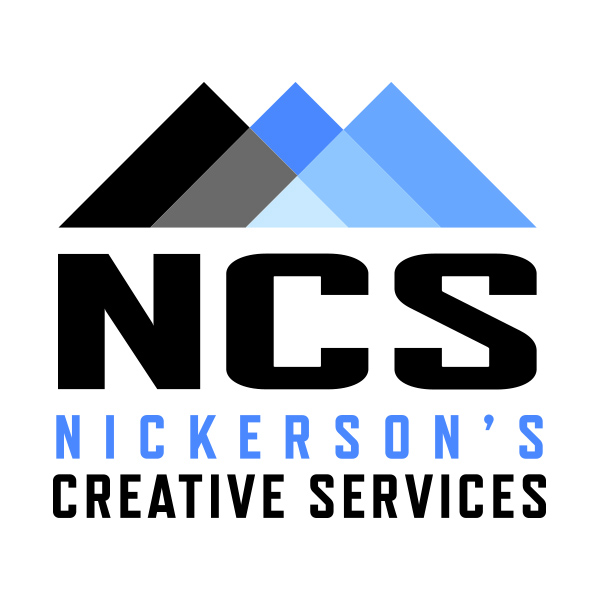
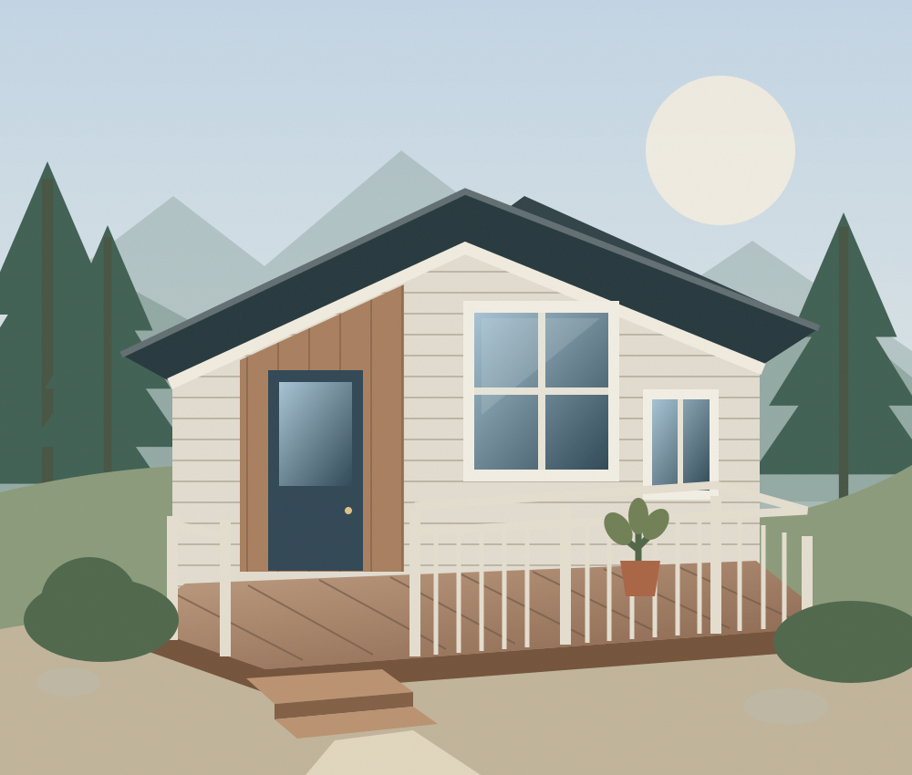

Decks & fences
Make more of the outdoors with a new deck or fence that feels right at home.
DECK BUILDS · FENCE BUILDS
Nickerson’sANACORTES, WASHINGTON · EST. 2017
From the deck where you gather to the home you make your own, we build, repair, and refresh the spaces that matter.
Tell us about your project
More functional.✦ More beautiful.✦ Built to be cared for.
01 / WHAT WE DO
A fresh coat of paint. A whole new space.
Thoughtful work for whatever comes next.
Make more of the outdoors with a new deck or fence that feels right at home.
DECK BUILDS · FENCE BUILDSBring a fresh feeling to familiar spaces, from interior walls to exterior siding.
INTERIOR · EXTERIOR PAINTINGCare for the details that protect your home, and give worn-out materials a fresh start.
SIDING · ROT & TRIM REPAIR · WINDOWSReady to reimagine a space? Let’s talk about the changes that will make it work for you.
FULL RENOVATIONS · DEMOLITION02 / THE PEOPLE BEHIND THE WORK
We’re Chris and Kelly Ann Nickerson, the family behind Nickerson’s Creative Services. We started NCS in Anacortes in 2017, and we’re grateful to call this community home.
For us, it’s an honor to make your spaces more functional, more beautiful, and to help protect the home you’ve built your life around.
To the customers who have trusted us with their homes and buildings over the years: thank you. We look forward to what we can build together next.
03 / A GOOD PLACE TO START
A repair, a refresh, or a bigger change. Tell us what you have in mind.
We’ll discuss your space, your goals, and the timing of your project.
Connect with Chris or Kelly Ann to discuss scheduling and getting started.
YOUR NEXT HOME PROJECT STARTS HERE
We’d love to hear about it. Give us a call or send a text to start a conversation about your project.
⌖ Based in Anacortes, WashingtonTHE WORK
General Contractor
360-982-3278 Send Chris a textTHE DETAILS
Office Manager
206-819-9844 Send Kelly Ann a text